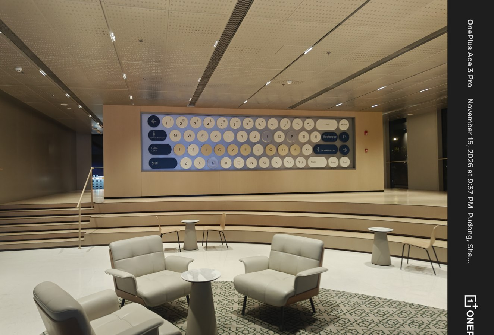
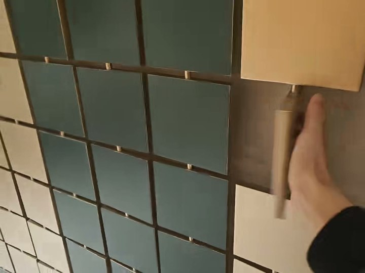
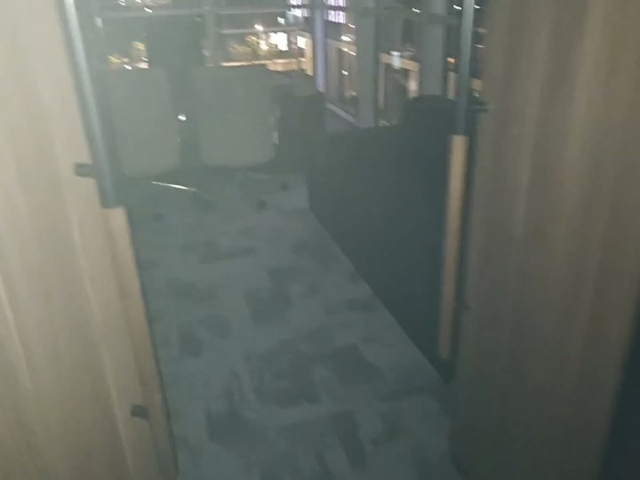
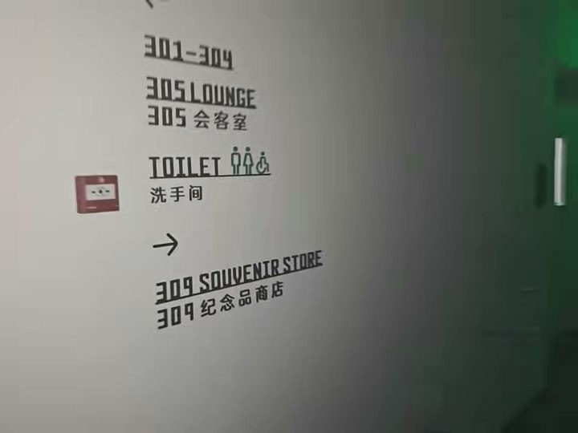
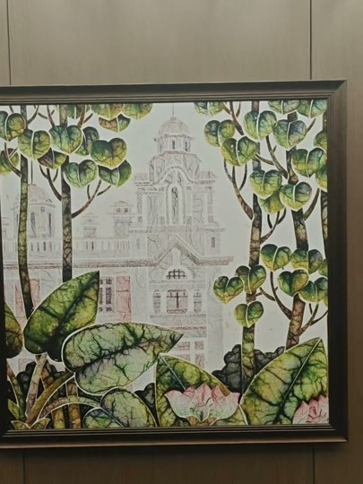
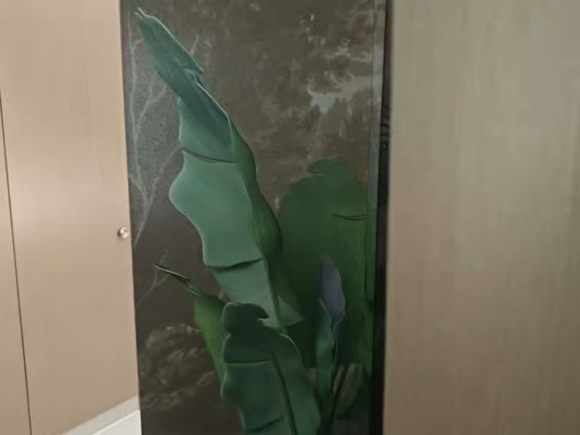
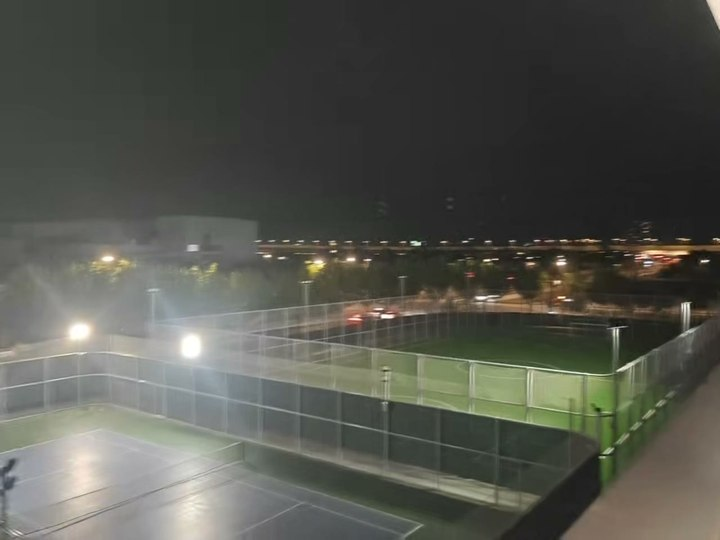

HKU 上海校园实拍素材库
按点位查原图、原片和关键帧。素材卡标注画面可确认的细节和待核尺寸。
校园实拍照片


校园实拍视频


HKU 翻板墙走廊
实拍展示两色板阵列、墙框、走廊和单板翻动。
楼栋、楼层、墙宽高、转轴尺寸和走廊端点待核。



夜间室内走拍与接待角
可辨认玻璃、地毯、木门、柜体和局部墙面。
暗光和运动模糊较多，仅作装潢参考；楼层和路线未核对。



305／309 指示与夜间走廊
画面可读 305 会客室、309 纪念品商店与洗手间指示，提供局部门位关系。
门牌可见，楼栋、路线起终点和相邻空间未核对。



植物与建筑主题墙画
拍到木饰面上的画框、植物和建筑图案，可作为装饰造型参考。
画作作者、使用权限、尺寸及所在空间待核。
查看关键帧和时间戳



木门与叶形装饰
画面可辨认浅木门和竖向叶形装饰。
暗部细节有限，镜面材质、楼层、走廊连通及完整装饰尺寸待核。
查看关键帧和时间戳



球场夜景、栏杆与邻侧休息区
拍到高处栏杆、球场照明、玻璃和回到室内后的休息座椅。
球场对应编号、取景楼层、实际路线和标高待核。